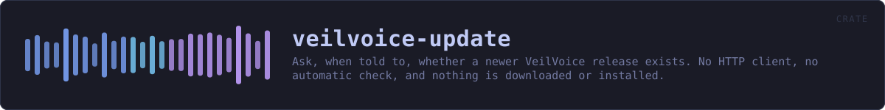

veilvoice-update
Ask, when told to, whether a newer VeilVoice release exists. No HTTP client, no automatic check, and nothing is downloaded or installed.
reference · the same page on GitHub
Ask, only when told to, whether a newer VeilVoice release exists.
What this is, and the claim it changes
Until this crate existed, VeilVoice's front page said "no telemetry, no update check". Half of that is unchanged and half of it is not, and the wording moved in the same commit as the code rather than afterwards:
- No telemetry. Unchanged, and nothing here sends anything about you. The request is a plain
GETof a public URL that anybody can open in a browser; it carries no identifier, no configuration and no counter. - **No automatic update check.** Nothing runs on a timer, at startup, or in the background.
checkruns because a person pressed a button in this run of the program, and it does nothing else ever.
An update checker that runs by itself is a beacon: it tells a server that this machine has VeilVoice on it, roughly how often it is used, and from which address. That is the thing being refused. A button somebody presses, once, when they want to know, is a different act with different consequences, and it is the only one on offer.
There is still no HTTP client in the dependency graph
This crate has no dependencies. It runs the transfer tool the operating system already ships, exactly as veilvoice-verify has fetched releases since it existed, and reads its output. cargo tree shows no reqwest, no hyper, no ureq; the CI job that fails the build if one appears is unchanged and still passes.
The tool is found at an absolute path, never by bare name. Resolving a program by name on Windows searches the current directory before most of PATH, so a file called curl.exe sitting beside the program would be run instead of the system one. That is finding F-13, and it does not get to happen twice.
What it will not do
It does not download a release, it does not install anything, and it does not restart the program. It reports a version string and leaves every decision to the reader. Downloading a release and checking its signature is veilvoice-verify's job, and that is a separate, deliberate act too.
An update checker that could install its own answer is an update checker that can be made to install somebody else's.
What a "newer version" is worth here
The answer comes from a public web page over TLS. That is enough to say "there is probably something newer, go and look" and it is not enough to act on: a name in a document is not a signature. Nothing in this crate verifies anything, and Report::caveat says so in the words the user sees rather than only in this comment.
In plain words
This is the "check for updates" button, and nothing else.
It runs when you press it and at no other time. There is no timer and nothing in the background, because a program that checks by itself is telling somebody else's computer that yours exists and how often you use it.
It reads a public page anybody can open, tells you the newest version number, and stops there. It does not download anything and it does not install anything.
HOW THE CRATE FITS TOGETHER
Every arrow is a crate:: or super:: path one module actually uses, read out of the source rather than drawn by hand.
The same graph as Mermaid source
%%{init: {"theme":"base","themeVariables":{"background":"#1a1b26","primaryColor":"#1f2335","primaryTextColor":"#c0caf5","primaryBorderColor":"#7aa2f7","secondaryColor":"#16161e","tertiaryColor":"#16161e","lineColor":"#737aa2","textColor":"#c0caf5","mainBkg":"#1f2335","nodeBorder":"#7aa2f7","clusterBkg":"#16161e","clusterBorder":"#2f3549","fontFamily":"ui-monospace, SFMono-Regular, Consolas, monospace","fontSize":"14px"}}}%%
flowchart TD
n_lib(["lib.rs<br/>536 lines"])
click n_lib href "https://github.com/tilas01/veilvoice/blob/main/crates/veilvoice-update/src/lib.rs" "open the source"This site loads no third-party script, so it cannot run Mermaid; the diagram above is the same nodes and edges drawn by the generator instead. GitHub renders the source below directly.
THE FILES
| File | Lines | What it is |
|---|---|---|
lib.rs | 536 | Ask, only when told to, whether a newer VeilVoice release exists. |
ask.rs | 26 | Run the real check once, by hand. |